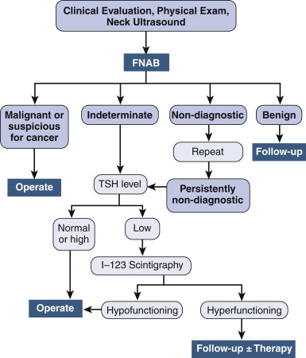

Thyroid Tumours
DEFINITION
This card will discuss thyroid tumours, benign and malignant.
top D I A B M
I M P home
INCIDENCE
95% of all endocrine cancers and 1.5% of all cancers
Incidence
Up to 6.4% women, 1.5% men have a lump.
Most benign and subclinical.
- cancer risk 0.8% for women, 0.3% for men.
Cancer is relatively rare but increasing.
Age
Papillary bimodal: younger adults and older.
Follicular middle age.
Medullary (non-familial) older.
Anaplastic elderly.
Median age cancer diagnosis is ~50y.
Risk Factors
Medical
Neck irradiation, lag period 6-35 yrs.
Especially important in first 2 decades of life.
Autoimmune thyroiditis may be a risk.
Environmental
Low iodine increases risk of follicular cancers.
High iodine increases risk of papillary cancers.
Family
Medullary Ca 20% assoc with the MEN 2 syndrome, or rarely
non-MEN familial syndromes.
- familial medullary thyroid cancer: AD, RET gene,
distinguished from MEN2; prophylactic thyroidectomy at 2yo
Papillary Ca is occasionally familial.
- familial papillary thyroid cancer: AD, genes unknown,
multifocal so remove gland, screen 1st and 2nd degree relatives
Follicular Ca is rarely familial.
top D I A B M
I M P home
AETIOLOGY
Pathogenesis
Consider thyroid specific tissues and general thyroid tissues
Specific cells: most tumours arise from follicular cells (papillary,
follicular, Hurthle, anaplastic); few from C-cells (medullary)
Other important general cells include lymphocytes and stromal cells.
Oncogenetics
RET protooncogine in both papilary and medullary Ca (encodes a
tyrosine kinase receptor protein)
RET is mutated in 95% of families with MEN-2 (medullary thryoid
carcinoma, phaechromoctyoma and hyperparathyroidism).
Sieve
Benign
Follicular adenoma
Malignant - primary
Papillary (85%)
Follicular (10%)
Medullary (neuroendocrine)
Anaplastic (<5%)
Lymphoma (<5%)
Squamous
Malignant - secondary
Rich vascular supply means thyroid is a common site for metastatic
spread.
top D I A B M
I M P home
BIOLOGICAL BEHAVIOUR
Natural history
The natural history of benign lesions is poorly understood (see
thyroid nodules card).
Most malignant types adopt a slow indolent course.
Death rate is only 6/million
However, it does kill and needs early diagnosis and treatment.
Pathology
Follicular Adenomas
May be autonomous - increasingly so as they grow bigger
- first warm, then hot, possibly becoming 'toxic' adenomas, with
frank thyorotoxicosis evident.
Pathogenetically involves mutations of the cAMP TSH cell-signalling
pathway.
Typically solitary, demarcated, with areas of haemorrhage, fibrosis,
calcification and cystic change.
Subtypes: papillary, follicular and Hurthle cell.
- Hurthle is mitochrondria rich; stain red as esophinophilic
staining; 'oncocytic cells'
- Hurthle are slightly more aggressive, perhaps, note that all
follicular are though anyway
Further subdivided by pathologists.
- but ultimately all have same significance anyway.
Are not pre-malignant.
Solitary nodules sometimes turn out to be cysts instead: usually
cystic degeneration of a follicular adenoma.
Papillary Carcinoma (75-85%)
May be multifocal.
Age 20-40s, strongly associated with ionizing radiation.
F>M 2:1.
Quite indolent, even when through cervical nodes.
More likely cancer at extremes of age, male, family history, or neck
irradiation.
- (with irradiation, get new thyroid nodules at a rate of 2% per
year).
Most often presents with a palpable lump noticed
by pt or on exam.
- 50% may have cervical nodal disease at diagnosis
Histologically
FNAB is very accurate.
- if indeterminate, supplementary genetic analysis (eg BRAF, RET)
Show branching papillae (fibrovascular stalk with layers of cuboidal
epithelial cells, well differentiated)
- classic Orphan-Annie / ground glass nuclei of papillary carcinoma
cells.
- concentrically calcified psammoma bodies are specific.
The follicular variant of papillary carcinoma has a follicular
architecture but the same nuclei.
- are unencapsulated too, whereas true follicular carcinomas are
usually encapsulated.
Tall cell variant tends to have large columnar cells and often
metastasise.
10 yr survival of at 98% for papillary, 92% for follicular variant
- prognosis depends on size of original lesion.
Follicular Carcinoma (10-20%)
Usually women, usually older (40s-50s) than for papillary
cancers.
Minimally, moderately & highly invasive types.
- extensive invasion of thyroid tissue is specific for follicular.
Prognosis differs accordingly.
Hurthle cell subtype - more invasive.
Early haematogenous spread.
Likes lung, bone (osteolytic) and CNS.
Rarely functioning.
10 yr survival <75%
Hurthle Cell Cancers (4%)
Subtype of FTC but a distinct entity
Often multifocal and bilateral
Readily metastasizes to nodes
- 10-20% present with nodal mets
Medullary (5%)
80% sporadic, 20% in MEN IIA or IIB or otherwise familial.
- MEN in younger pts, sporadic in older.
- also isolated familial MTC syndrome (RET proto-oncogene defect).
Initially primary C-cell hyperplasia
- progresses to early invasive microscopic Ca
- progresses to grossly invasive Ca
Neuroendocrine tumours (parafollicular C cells)
Secrete calcitonin, and less often other polypeptides eg CEA,
somatostatin, serotonin, CIP.
Calcify, with amyloid deposits and polygonal / spindle-shaped cells.
MEN often multiple, others single.
- 30% bilateral disease
Metastasise readily - usually through neck by time of pick-up.
- sometimes by a paraneoplastic syndrome eg diarrhoea,
5 yr survival 50%.
Anaplastic (<5%)
Undifferentiated tumours.
Mean age 65.
Most have a history of MNG / carcinoma.
- probably arise from coexisting carcinomas, likely loss of p53.
Aggressive, grow fast, spread locally.
Present as a bulky neck mass, compression and invasion.
Uniformly fatal., usually within 1 year.
Lymphoma
Typically seen in thyroiditis in older women.
top D I A B M
I M P home
MANIFESTATIONS
Symptoms
Local
Often asymptomatic until pt notices the lump.
- most (95%) lumps are benign
Pain is a rare feature.
Mass effect
Malignancy may encroach on, or invade into surrounding structures.
Obstruction to oesophagus, trachea and venous outflow from the head
are possible.
Hoarseness due to recurrently laryngeal nerve palsy.
Metastatic
Mass effects of cervical nodes.
Lungs, CNS and bone usual distant sites.
Endocrine
Thyrotoxicosis possible - most likely in adenoma, rare in
carcinoma.
Cancer in ~10% of cold adenomas, but far less often in hot adenomas.
Paraneoplastic syndromes in medullary carcinoma
Signs
Refer thyroid nodules card.
Associated with Ca are:
Firm fixed nodule
Cervical lymphadenopathy
Vocal cord paralysis
High vs Low Risk Cancers
(based on AGES system; age, grade, extent, size)
Low:
Female <50, Men <40
Well differentiated
Tumour <4cm
Tumor confined to thyroid
No mets
High:
Women >50, Men >4
Poorly differentiated (tall cell, columnar cell or oxyphilic
(=Hurthle))
Tumour >4cm
Local invasion
Distant mets
top D I A B M
I M P home
INVESTIGATIONS
Refer to thyroid nodules card for diagnostic approach to a thyroid
lump.

Concerning sonographic features are:
- ill-defined margins
- irregular shape with anteroposterior dimension > transverse
(taller than it is wide)
- central vascular pattern (peripheral vascularity less concerning)
- microcalcifications (macrocalciucifications not so bad)
- a halo, spongiform pattern and comet tails are relatively benign
features
- completely cystic = not concerning
FNAB on lesions 1cm + great as above.
- accurate for PTC and MTC (false +ve 1-2%)
--> if shows MTC, then: baseline calcitonin, and screen for
adrenal phaeo and hyperparathyroidism.
--> if PTC, USS of neck reqd, then can perform a central or
lateral neck dissection as reqd.
FNAB is not accurate for follicular carcinoma or HCC - this requires
tissue for capsule invasion or vascular invasion.
- then, a serum TSH with I-123 Scintigraphy can help show the
hypofunctioning nodules; risk stratifies from 1% (hyper) to 20%
(hypo)
--> operate if cold, follow-up +/- treat if hot.
USS nodes?
Lateral neck if clinically concerning or suspect
Central compartment USS is not very reliable.
Indications for CT
Possibly invasive
- RLN palsy, very hard tumours, poorly differentiated tumours
Retrosternal tumours (can't get under them with palpation)
Contrast or no?
Avoid if possible - jod basedow phenomenon and can't give iodine
rads for 3m
But do consider it in highly aggressive tumours to aid surgical
planning.
- an alternative here is MRI, which may be better.
Biochemistry
Calcitonin
Raised in medullary cancer.
Useful to follow-up for residual disease.
Thyroglobulin
Raised in differentiated cancers.
Not specific - also raised in Graves, goitre and adenomas.
Not sensitive either.
Useful to follow-up for residual disease.
Histo
What is Atypia?
Papillary = based on nuclear and non-nuclear features
- nuclear: nuclear grooves, margination of chromatin,
overlapping nucleii
- non-nuclear: papillary frongs, fibrovascular core, psamomma bodies
Follicular = hypercellularity and microfolicular pattern
- Note that Bethesda 3 = micro pattern
- while Bethesda 4 = micro pattern and something else concerning
e.g. powdery chromatin
- Follicular is quite a rare tumour; more likely to be follicular
variant of papillary Ca if Bethesda 4
Minimally-invasive follicular
Imaging
Xray lungs / bones if suspicion.
CT or MRI not required for staging.
Staging
AJCC Stating for differentiated thyroid cancers
- ie for PTC, FC and HCC
T1: <=2cm, limited to thyroid
T2: 2-4cm, limited to thyroid
T3: >4cm, limited to thyroid
T4a: Any size, extends beyond capsule to invade subcutaneous soft
tissues incl larynx, pharynx, oesophagus, RLN
T4b: Any size, invades prevertebral fascia or encases carotid artery
or mediastinal vessels.
N0: No regional nodes
N1: regional nodes
N1a: Mets to level VI (pretracheal, paratracheal, prelaryngeal)
N1b: Mets to unilateral or bilateral cervical or superior
mediastinal nodes
M0: no distant mets
M1: distant mets
Stage groups
<=45 y:
Stage 1: any T, any N, M0
Stage 2: any T, any N, M0
>45 y:
Stage 1: T1, N0, M0
Stage 2: T2, N0, M0
Stage 3: T3, N0, M0 or T1/2/3 with N1a
Stage 4a: T4a, N0/1a/1b, M0 or T1/2/3/4a with N1b, M0
Stage 4b: T4b, any N, M0
Stage 4c: anything with M1
Other prognostic features
M worse than F
Margin completeness
Cell type (tall, insular)
top D I A B M
I M P home
MANAGEMENT
Depends on FNA result and type of Cancer.
Pre-op Work-up
E.g. PTC on
1. USS
2. Calcium
3. Baseline thyroglobulin
4. Flexible laryngoscopy for all pts
5. CXR
PTC
No RCTs; guidelines based on consensus and retrospective
analysis.
1. Total thyroidectomy or lobectomy depending on risk profile
- total = best oncologically, lowest recurrence and most effective
thyroglobulin monitoring and radio-iodine usage.
- total also = eliminates 1% risk of anaplastic dedifferentiation.
- besides risk features above, NCNN recommends total if: age < 15
or >45, prior head / neck radiation, tumour >4cm, cervical
mets, not well differentiated.
Bottom line is any well
differentiated cancer >1cm in size then total thyroidectomy
(and essentially get radioI in Aus as well)
- if low risk and <1cm then lobectomy fine.
- if it was Bethesda 4 and you did a lobectomy, then go back and
take the rest if >1cm
2. If underwent lobectomy, completion thyroidectomy indicated if:
- 1cm+ or <1cm and multicentric (multicentric in 70%)
- or associated nodal or systemic disease.
--> perform within 6m as lower risk of nodes and better survival.
--> but if not done within 2 weeks, must give it time to settle
down; 6w+ (inflammatory tissue - risk to RLN).
always think about and discuss the need for radioactive iodine in
context of completion thyroidectomy
- e.g. if >1cm going to get radioI often, so best to complete
3. En-bloc resection of extra-thyroid spread.
- take RLN only if paralyzed else shave it off.
- (any pt with voice change should have pre-op laryngoscopy)
4. Central or modified neck dissection indicated at original surgery
if:
- macroscopic nodal disease present in central / lateral neck.
Means removal of all nodes and fibrous fatty tissue from hyoid
superiorly to brachiocephalic inferiorly and between carotid
arteries laterally.
- level VI nodes removed; prelaryngeal, pretracheal and
paratracheal.
Modified neck dissection = removal of upper, middle and lower
cervical nodes
- levels II, III, IV
- as well as posterior cervical and supraclavicular nodes (level V)
ATA Guidelines recommend routine central neck dissection for PTC
patients
- high risk of disease
- higher complications if left until later
- risk benefit ratio balanced against risks to nerves /
parathyroids.
Follicular Thyroid Cancer
1. Usual pathway is diagnostic lobectomy and isthmusectomy.
2. If positive for FTC (or PTC or follicular variant of PTC) then
completion thyroidectomy.
- if nodular disease >1cm OR prior head / neck irradiation,
consider initial definitive thyroid lobectomy.
- within 2w or after 3m
3. Definitive pathology will divide into either i) Minimally
invasive carcinoma; or ii) Invasive carcinoma.
- minimally invasive = encapsulated with minor capsular invasion
- invasive = angioinvasion or extensive invasion beyond capsule
--> minimally invasive: lobectomy and isthmusectomy good enough
--> invasive --> total thyroidectomy; risk of mets much higher
(10yr mortality ~30%)
4. No need for prophylactic neck dissection
- risk of mets is very low.
--> Central and modified neck dissections are reserved for those
with biopsy positive disease.
Hurthle-Cell Cancer
1. Usual pathway here is diagnostic lobectomy and isthmusectomy
to distinguish benign from malignant.
- 20% of Hurthle's will be malignant.
2. All need total thyroidectomy.
3. All need central neck dissection.
- high rate of lymph metastasis.
- radio-resistant so surgery offers best chance of cure.
Post-Operative Management of Differentiated Thyroid Cancer
1. Radio-iodine Ablation of Remnant Tissue
- Ablates residual thyroid as well as residual microscopic
disease.
- Emits B-radiation over 1-2mm distance; cytotoxic to follicular
epithelia.
- Optimized use of Tg and radioiodine whole-body scanning for
recurrent disease detection.
- Reduces recurrence and cancer-specific mortality in high-risk PTC
--> recommended for pts with incomplete tumour resection,
extra-thyroidal spread, nodal or distant disease, or aggressive
histology.
--> controversial in pts with low-risk PTC
--> not indicated for pts with unifocal PTC <1cm without
extrathyroidal spread or mets.
-> generally given in Australia for tumours >1cm esp if age
>45 although data says >3cm
Explanation
Take for e.g. a 1cm papillary tumour
- 1% risk of local recurrence, 20% risk of nodal recurrence
--> are the nodal recurrences clinically significant? not sure.
Pick up many more with Tg than become clinically important.
RadioI will not help these people
- no benefit for survival on trials
BUT, if 10mm and over 45, most will get it to treat latent nodal
disease without serious evidence of benefit
- if <10mm, not unless multicentric
- surgical gain in high risk pts (e.g. >3cm) is proven
- also radI does make Tg monitoring more sensitive due to ablation
of all current disease.
Side effects?
Mainly on salivary glands: inflammation (sialidinitis; early or
late, can be hard to treat)
- also xerostomia, stones.
Long term increased malignancy risk: esp with multiple treatments
- salivary glands, leukaemias.
2. Radio-iodine uptake depends on TSH stimulation
Inhibited by excess iodine from the diet or from IV contrast during
CT
Pts given short-acting T3 post-op 25ug/day to minimize hypothyroid
period prior to ablation (stopped 2w before so still a period of
hypothyroidism)
OR given recombinant human TSH, avoiding development of hypothyroid
sx (preferred but only 1 sponsored by Aus govt).
- this given in 2doses over 2d then next day RadioI given; costs 2K
- on d4/5 measure Tg
- these pts can cont thyroxine and do not get hypothyroid, which is
unpleasant+
2/52 prior to radioiodine therapy, T3 is ceased, pt placed on
low-iodine diet to maximize uptake and retention of radioiodine by
remnant cells.
- pts serum TSH shd be >30 to enhance uptake.
30 mCi dose given as an outpatient, successful in 80% of pts.
- whole-body scan 2-5d later to check for residual uptake.
- if remnant tissue, second dose 6-12m later.
3. Thyroid Hormone
Administered for treatment of hypothyroidism to reduce serum TSH
- TSH stimulates tumour growth, invasion and angiogenesis.
- TSH-suppressive doses reduce recurrence and mortality.
After ablation, given levothyroxine at 2 ug/kg/day, TSH measured
5-6w later.
- normal TSH level is 0.4-4
--> want TSH between 0.1-0.5 IU/mL if pt high risk and free of
disease
--> or between 0.3-2 for pts with low risk disease.
--> of <0.1 if metastatic disease
But note that risk of hyperthyroid state with suppression,including
osteoporosis and cardiac arrhythmiasso avoid if young where
possible.
4. External beam radiation
- only when complete surgical excision not possible.
5. Chemotherapy
- no role.
Follow-up of Differentiated Thyroid Cancer
1. Seen 6monthly for 2 years then annually if fine.
- need long term as recurrences can be very late
2. Neck palpated
3. Need serum TSH, basal Tg, anti-Tg
- Tg is a glycoprotein produced by normal and neoplastic thyroid
tissue.
--> Level should be undetectable after total thyroidectomy and
ablation.
--> Reliant on TSH; reliable and if TSH is suitably high,
excludes residual or metastatic disease in 99%.
- Anti-Tg, however, interferes with accuracy of Tg (found in 25% of
DTC pts); causing false-positives and false-negatives.
--> If negative Tg, negative radioiodine whole-body scan, and
negative neck USS, routine radioiodine scans unnecessary
--> If elevated Tg, and negative neck USS, then radioiodine
whole-body scan indicated to localize met disease
- (e.g. if Tg>3 ng/dL, while on thyroid hormone; or >10 ng/dL
if off hormone)
- if cannot tolerate withdrawl of hormone, recombinant human TSH
used to facilitate Tg measurement (not funded here yet)
Recurrence?
DTC recurs in 20-40%, incidence greatest in first 2y
Met disease 10-15%, most often involving lung or bone.
Pats with met disease are treated with radioiodine in therapeutic
doses (150-200 mCi)
--> response rate of 45%
10 year survival rate 25-40%
New molecular-based therapies are under active investigation.
Medullary Thyroid Cancer
1. Pre-op testing
- to RET proto-oncogene
- serum CEA and calcitonin (baselines)
--> high calcitonin correlates with tumour bulk, lymph node mets,
systemic mets.
--> high CEA is associated with a worse prognosis.
- also all should have serum calcium (MEN2A screening)
- and either plasma free metanephrines or 24h urinary catecholamines
and metanephrines prior to surgery.
--> treat coexisting phaeo prior to thyroidectomy.
2. Pre-op imaging
USS to determine extent of local neck dissection.
- examine central and lateral neck.
Additional imaging if serum calcitonin >400 or lymph node mets
- CT neck, chest abdomen; nodes, lung and liver mets?
- MRI most sensitive for liver and complimentary with bone
scintigraphy.
- if marked hypercalcitonaemia, diagnostic laparoscopy may be
useful.
3. Operate
Total thyroidectomy.
- because 30% sporadic and all familial will have multicentral /
bilateral disease
Spreads with lymph nodes to central neck in 50%
--> ATA recommends central neck dissection as routine (level VI)
- and modified neck dissection for pts with disease in central or
lateral neck (II, III, IV, V)
- [central neck disease common and is a risk marker for lateral
disease]
--> unfortunately pts with regional nodal disease are rarely
curable.
4. Routine genetic testing of family
Performed in children of parents who have hereditary MTC.
--> Prophylactic thyroidectomy within first year of life in pts
with RET mutations for MEN 2B and within 3-5y in patients with 2A
and FMTC.
--> treat before calcitonin levels elevate.
- then no need for central compartment dissection and parathyroid
risk.
5. Post-operative
Replace thyroid hormone.
- unlike DTC, do not treat with TSH suppressive doses
--> C cells do not respond and do not concentrate radio-iodine.
Follow up with periodic physical, measurement of serum calcitonin
and CEA
- if calcitonin <150 pg/mL, USS is sufficient.
USS most sensitive for neck disease;
- but where serum calcitonin is high, further imaging is needed: CT
chest, MRI liver, bone scintigraphy.
External beam rads only useful when margins grossly or
microscopically positive.
6. Prognosis
10y survival approx 75%, but 45% if LNs.
Anaplastic Thyroid Cancer
All patients are classified as stage IV
Usually no role for surgery; typically highly advanced.
- rarely may have disease localized to the gland.
Multimodal therapy is routine
- external beam often, chemotherapy not very helpful
Tracheostomy for impending obstruction.
Prognosis
Median survival 5-6m
Survival at 1y = 20-35%
Die of asphyxiation or systemic mets
Active trials in modern targeted agents; so far ineffective
Lymphoma
1. Workup
TSH, antimicrosomal antibody, FNAB with flow cytometery and
sometimes core needle biopsy.
Usually need open biopsy for histochemical studies.
CT neck chest abdo, and FDG-PET and bone-marrow biopsy usually
needed for diagnosis.
2. Treatment by Hematologist
Highly responsive to chemo and radiotherapy.
Combination cyclophosphamide, doxorubicin, vincristine, prednisone.
MALT = radiation alone; chemo if more advanced.
Thyroidectomy has a limited role (i.e. when mistaken pre-op
diagnosis).
3. Prognosis
Depends on stage. '
- MALT better
Overall 50-70%; as high as 90%
Poor prognosis if advanced stage; >10cm, mediastinal involvement,
older (>65), dysphagia.
top D I A B M
I M P home